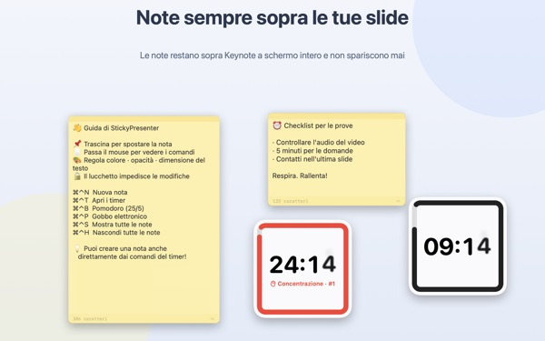
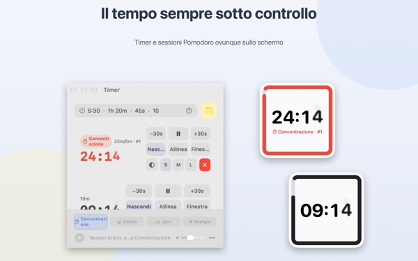
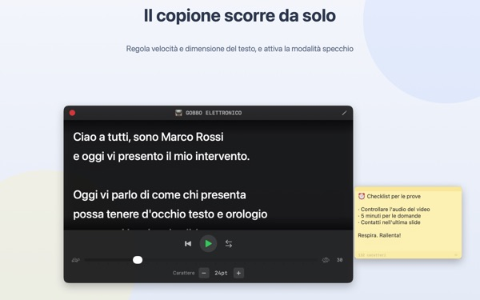
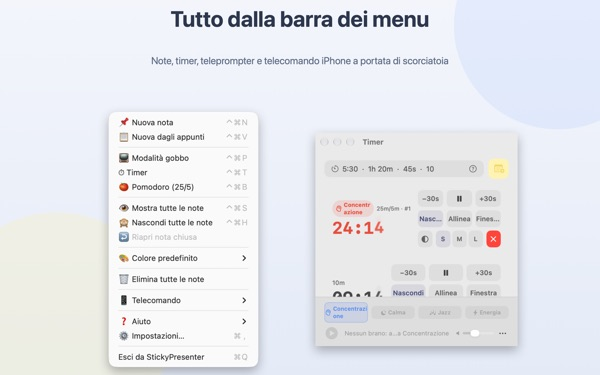

Il tuo testo e il tuo tempo,
sulla slide
Metti Keynote a tutto schermo e le note e il timer restano sopra. Non tolgono mai il focus all’app di presentazione, quindi il telecomando continua a far scorrere le slide.
Tutte le funzioni sono gratuite. Richiede macOS 14 o successivo.

Provalo su una slide
Scrivi un tempo come faresti nell’app. Tocca 15s per vedere come il widget ti avvisa quando il tempo sta per finire.
Dove metti testo e orologio mentre presenti?
La vista relatore occupa un secondo schermo, e il pubblico nota sempre quando guardi l’orologio. Magari ti è capitato di attaccare un foglietto al portatile e vederlo cadere. StickyPresenter fissa il testo e il tempo rimasto proprio sopra la slide, dove hai già lo sguardo.
Un’occhiata e sai quanto manca
Un widget quadrato in un angolo mostra il tempo rimasto. Diventa rosso quando la fine si avvicina e, allo scadere, suona e fa lampeggiare il bordo.
Scrivi i tempi come ti viene, per esempio 5:30 o 1h 20m, oppure 25/5 per un Pomodoro che alterna concentrazione e pausa. Apri il timer in una finestra a parte per condividere solo quella con la condivisione schermo o AirPlay.

Leggi il testo guardando in camera
Il gobbo elettronico fa scorrere il testo alla velocità che scegli e si ferma da solo alla fine. Copia il testo, premi ⌘⌃P e si apre già pronto.
C’è anche la modalità specchio per i gobbi con vetro riflettente, e velocità e dimensione del testo restano uguali la volta successiva.

Senza lasciare la slide
Funziona in silenzio dalla barra dei menu, senza icona nel Dock e senza finestre da tenere d’occhio. Abbreviazioni come ⌘⌃N per una nuova nota o ⌘⌃T per i timer rispondono anche con Keynote a tutto schermo.
Sul palco, l’app gratuita per iPhone Remote Controller for Sticky ti permette di avviare e mettere in pausa il timer e di spostare il widget se copre una slide.

Tre passaggi per iniziare
- 1
Apri l’app
Nella barra dei menu compare l’icona di una nota e, la prima volta, si apre una breve guida.
- 2
Aggiungi nota e timer
Copia il testo e premi
⌘⌃V, poi scrivi la durata del tuo intervento nel campo del timer. - 3
Passa a tutto schermo
Nota e timer restano in primo piano.
Abbreviazioni e formati del tempo
- ⌘⌃N
- Nuova nota
- ⌘⌃V
- Nuova nota dagli appunti
- ⌘⌃T
- Mostra o nascondi i timer
- ⌘⌃B
- Avvia un Pomodoro (25 min di concentrazione, 5 di pausa)
- ⌘⌃P
- Gobbo elettronico
- ⌘⌃S · ⌘⌃H
- Mostra o nascondi tutte le note
- 10
- Un numero da solo indica i minuti (10 min)
- 5:30 · 1:15:00
- Minuti:secondi, ore:minuti:secondi
- 1h 20m · 45s
- Con le unità
- 25/5
- Concentrazione/pausa, a ciclo finché non lo fermi
Tutte le abbreviazioni usano insieme Comando (⌘) e Control (⌃) e funzionano anche mentre sei in un’altra app. I timer arrivano fino a 99:59:59.
Domande frequenti
È davvero gratis?
Sì. Tutte le funzioni sono gratuite, e l’app per iPhone Remote Controller for Sticky è un’altra app gratuita. Se ti è utile, puoi lasciare una mancia allo sviluppatore dalle Impostazioni; non sblocca nulla.
Posso mostrare solo il timer durante la condivisione o la duplicazione dello schermo?
Sì. Con il pulsante Finestra nella riga del timer lo apri come una finestra normale: compare così nell’elenco finestre della condivisione schermo e di AirPlay, e puoi condividere solo quella.
Ho nascosto un widget e non lo trovo più.
Nella finestra dei timer, passa il puntatore sulla riga di quel timer e la posizione del widget viene evidenziata con una linea tratteggiata. Fai clic su Allinea per riportarlo accanto alla finestra.
Ho chiuso una nota per sbaglio.
Con Riapri nota chiusa nella barra dei menu recuperi una qualsiasi delle ultime 20. Le note si salvano mentre scrivi e tornano nello stesso punto quando riapri l’app.
Un’abbreviazione non funziona.
Se nella tabella delle abbreviazioni della guida risulta Usata da un’altra app, vuol dire che un’altra app l’ha presa prima. Chiudi quell’app e tornerà a funzionare. Non serve il permesso di Accessibilità.
Perché il tema Camaleonte chiede la registrazione dello schermo?
Camaleonte legge il colore dello schermo dietro il widget per adattarsi, e per farlo serve quel permesso. Non viene salvato né inviato nulla. Senza permesso, i temi Sistema, Chiaro e Scuro funzionano normalmente.
Come aggiungo la musica di sottofondo?
Scegli un’atmosfera (Concentrazione, Calma, Jazz o Energia) nella barra della musica in fondo alla finestra dei timer e l’app crea una cartella per ciascuna. Mettici i tuoi brani e verranno riprodotti in ordine insieme al timer. L’app non include musica.
Il telecomando su iPhone non trova il mio Mac.
Controlla in ordine: StickyPresenter è aperto sul Mac (cerca l’icona nella barra dei menu); i due dispositivi sono sulla stessa rete Wi‑Fi, non su una rete ospiti né in cellulare; Rete locale è consentita per l’app in Privacy e sicurezza, sia su iPhone sia su Mac; la VPN è disattivata.
Il telecomando dice che il codice di abbinamento è sbagliato.
Inserisci il codice di quattro cifre mostrato in questo momento sotto Telecomando nella barra dei menu del Mac. Se hai fatto clic su Nuovo codice di abbinamento, vale solo quello nuovo. Dopo il primo abbinamento, si collega appena apri l’app.
Qualcun altro potrebbe controllare il mio timer?
Non senza il tuo codice. Il Mac accetta solo telecomandi che hanno inserito il codice giusto, tramite una connessione diretta cifrata sulla rete locale. Se qualcuno ha visto il codice, usa Nuovo codice di abbinamento o Dimentica i telecomandi abbinati sotto Telecomando nella barra dei menu.
Dove vengono salvati note e testi?
Solo su questo Mac. Niente account, niente pubblicità, e niente va online tranne statistiche d’uso anonime e i feedback che scegli di inviare.
Domande, bug o idee? Scrivi a mizzking75@gmail.com.